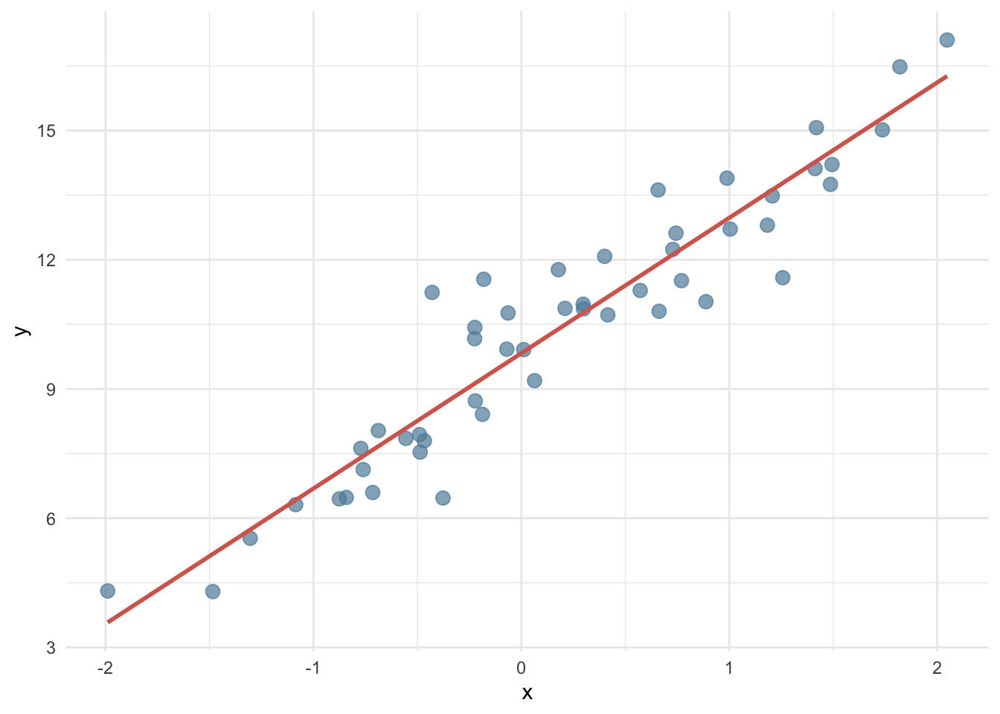
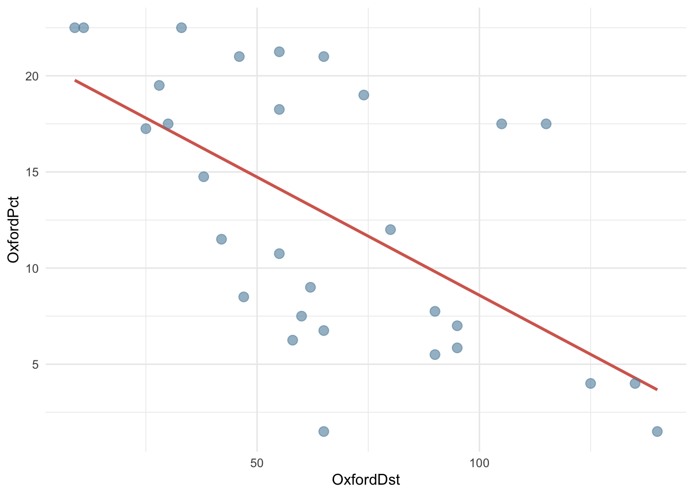
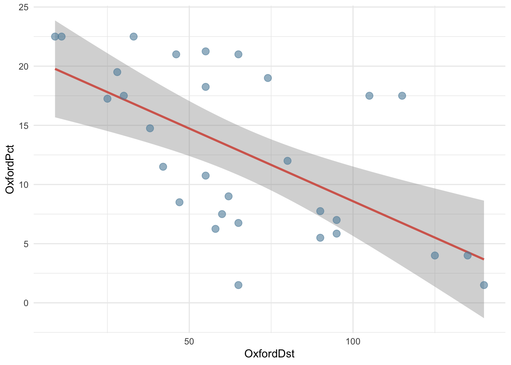
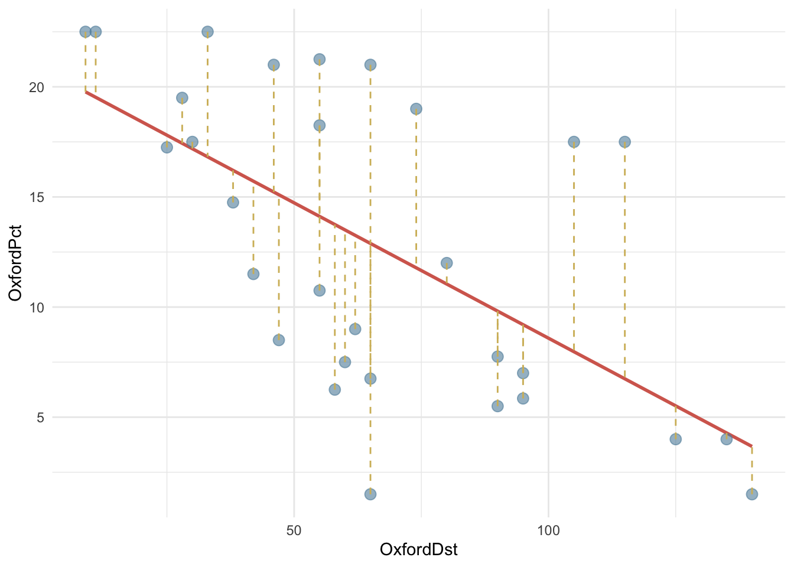
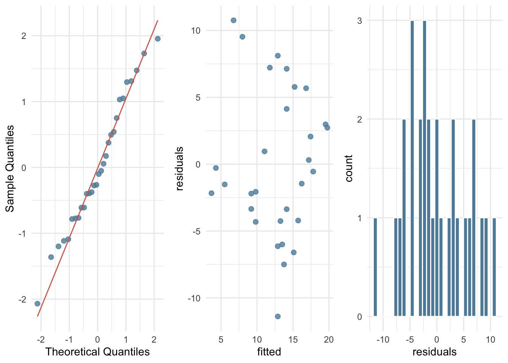
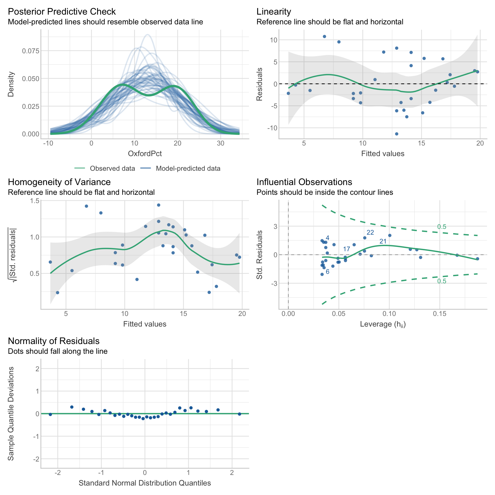

#install.packages("archdata")
library(archdata)
data("OxfordPots")
OxfordPots22 Регрессионный анализ
В этом уроке мы познакомимся с методомами простой и множественой линейной регрессии.
22.1 Данные: Оксфордская керамика
Данные для этого урока основаны на нескольких публикациях Яна Ходдера, который проанализировал пространственное распределение поздней романо-британской керамики, произведенной в Оксфорде, в статьях 1974 г. “The Distribution of Two Types of Romano-British coarse pottery” и “A Regression Analysis of Some Trade and Marketing Patterns”. Датасет доступен в пакете archdata, содержащем и другие наборы данных для археологов.
Датафрейм содержит 30 наблюдений по следующим 7 переменным:
- место;
- процент оксфордской керамики;
- расстояние до Оксфорда в милях;
- процент гончарных изделий из Нью-Фореста;
- расстояние до Нью-Фореста;
- площадь обнесенного стеной города;
- наличие водного транспортного сообщения.
22.2 Простая линейная регрессия
который позволяет предсказывать количественный отклик переменной y на основе единственной независимой переменной x. Случайная величина, которая используется для целей предсказания, называется предиктором. Величина, значения которой предсказываются, называется переменной отклика. Здесь мы освоим лишь самые азы, подробнее стоит посмотреть соответствующие уроки курса “Introduction to Modern Statistics (2e)”.
22.2.1 Линейная функция
Чтобы разобраться с регрессией, надо вспомнить, что такое линейная зависимость:
\[y\approx\beta_o + \beta_1x\] В этом уравнении \(\beta_o\) и \(\beta_1\) - это константы, известные как свободный член и угол наклона линейной модели. Совокупно из называют коэффициентами, или параметрами, модели. Геометрически первый из них определяет точку пересечения оси y (intercept), а второй – угол наклона (slope).
Посмотрите внимательно на линии на примере и подумайте, чем они отличаются.

22.2.2 Ошибка прогноза
На практике линейная зависимость в чистом виде почти не встречается: всегда есть небольшая ошибка прогноза (\(\epsilon\)):
\[y\approx\beta_o + \beta_1x + \epsilon\]
`geom_smooth()` using formula = 'y ~ x'
При создании регрессионной модели наша задача заключается в том, чтобы на основе доступных наблюдений подобрать коэффициенты \(\beta_0\) и \(\beta_1\) таким образом, чтобы минимизировать ошибку.
\[\sum(y_i- \hat y)^2 = \sum\epsilon^2\]
Чтобы подчеркнуть, что речь идет лишь об оценке, над бетой ставится “крышечка”:
\[\hat y \approx \hat\beta_o + \hat\beta_1x\]
22.2.3 Простая регрессия с lm()
Посмотрим, как связаны между собой процент керамических изделий из Оксфорда и расстояние от центра производства.
library(paletteer)
cols <- paletteer_d("ggthemes::wsj_rgby")
OxfordPots |>
ggplot(aes(OxfordDst, OxfordPct)) +
geom_smooth(method = "lm", color = cols[2], se = FALSE) +
geom_point(color = cols[3],
size = 3,
alpha = 0.6
) +
theme_minimal() `geom_smooth()` using formula = 'y ~ x'Чем дальше от Оксфорда, тем меньше керамических изделий оттуда, поэтому линия имеет отрицательный наклон.
И наклон, и точка пересечения с осью y определяет функция lm.
fit <- lm(OxfordPct ~ OxfordDst, data = OxfordPots)
summary(fit)
Call:
lm(formula = OxfordPct ~ OxfordDst, data = OxfordPots)
Residuals:
Min 1Q Median 3Q Max
-11.388 -4.003 -1.005 3.844 10.757
Coefficients:
Estimate Std. Error t value Pr(>|t|)
(Intercept) 20.87665 2.23356 9.347 4.18e-10 ***
OxfordDst -0.12290 0.02989 -4.112 0.000311 ***
---
Signif. codes: 0 '***' 0.001 '**' 0.01 '*' 0.05 '.' 0.1 ' ' 1
Residual standard error: 5.601 on 28 degrees of freedom
Multiple R-squared: 0.3765, Adjusted R-squared: 0.3542
F-statistic: 16.91 on 1 and 28 DF, p-value: 0.000311122.2.4 Коэффициенты модели
Функция summary() возвращает много всего, но пока нас интересуют только коэффициенты. Их можно достать из подогнанной модели так:
coefficients(fit)(Intercept) OxfordDst
20.8766508 -0.1229049 Это значит, что наши данные описываются функцией (где \(\epsilon\) - это ошибка):
\[OxfordPct = 20.88 - 0.12 \times OxfordDst + \epsilon\] Интуитивно понятно, что коэффициент \(\beta_1\) связан с ковариацией (мерой совместной изменчивости двух величин). Действительно, он рассчитывается по формуле:
\[\beta_1=\frac{Cov(x,y)}{Var(x)}\] Проверяем.
x <- OxfordPots$OxfordDst
y <- OxfordPots$OxfordPct
beta_1<- cov(x, y) / var(x)
beta_1[1] -0.1229049Зная \(\beta_1\), можно вычислить \(\beta_0\) по формуле:
\[\beta_0=\bar y - \beta_1 \bar x\]
Снова проверим.
beta_0 = mean(y) - beta_1 * mean(x)
beta_0[1] 20.8766522.2.5 Стандартные ошибки коэффициентов
Для обоих коэффициентов приведена стандартная ошибка и t-статистика.
summary(fit)$coefficients Estimate Std. Error t value Pr(>|t|)
(Intercept) 20.8766508 2.23355676 9.346819 4.184111e-10
OxfordDst -0.1229049 0.02989016 -4.111887 3.110772e-04Стандартная ошибка для \(\beta_0\) рассчитывается по формуле:
\[SE(\beta_0)=\sqrt{\frac{\sum_{i=1}^n\epsilon^2}{n-2}} \times \sqrt{\frac{1}{n}+\frac{\bar x^2}{\sum_{i=1}^n(x_i-\bar x)^2}}\]
Первый множитель в этой формуле – это дисперсия остатков модели. Чем она больше, тем больше неопределенность. На второй множитель влияет как размер выборки, так и разброс независимой переменной x: чем больше размер выборки n, тем меньше \(\frac{1}{n}\) и чем больше \(Σ(x - \bar x)^2\), тем меньше весь множитель. Посчитаем вручую и сравним с результатом, который возвращает команда summary(fit).
x_bar <- mean(x)
mult1 <- sqrt(sum(fit$residuals^2) / 28)
mult2 <- sqrt(1/30 + ( x_bar^2 / sum((x - x_bar)^2)))
mult1 * mult2[1] 2.233557Стандартная ошибка для \(\beta_1\) рассчитывается по формуле:
\[SE(b_1)=\sqrt{\frac{\frac{\sum_{i=1}^n\epsilon^2}{n-2}}{\sum_{i=1}^n(x_i-\bar x)^2}}\] Большая дисперсия остатков (в числителе) будет приводить к увеличению ошибки, а размах \(x_i\) – к уменьшению; интуитивно это объясняется тем, что в таком случае у нас больше информации для оценивания угла наклона. Снова перепроверим.
mult1 / sqrt(sum((x - x_bar)^2))[1] 0.02989016Функция geom_smooth добавляет стандартную ошибку коэффициента наклона на график в виде серой полосы, которая означает, что с вероятностью 95% (значение по умолчанию, которое можно поменять) истинное значение отклика находится в этой зоне (predicted ± 1.96 * se). В статистике это называется доверительный интервал.
OxfordPots |>
ggplot(aes(OxfordDst, OxfordPct)) +
geom_smooth(method = "lm", color = cols[2],
se = TRUE, level = 0.95) +
geom_point(color = cols[3],
size = 3,
alpha = 0.6
) +
theme_minimal() `geom_smooth()` using formula = 'y ~ x'
22.2.6 P-значения
library(broom)
tidy(fit)Столбец statistic, как легко убедиться, содержит результат деления коэффицентов на стандартную ошибку; а p.value (уровень значимости) указывает, какова вероятность случайно получить такое значение. В нашем случае – почти 0, что говорит о том, что доля оксфордской керамики на участке действительно зависит от расстояния.
tidy(fit) |>
transmute(t_stat = estimate / std.error) |>
mutate(p_val = 2*pt(abs(t_stat), 28, lower.tail = FALSE))Результат, возвращаемый функцией pt(), умножается на два, т.к. используется двусторонний t-test. Буква p в названии означает функцию распределения вероятностей (probability), а t – распределение Стьюдента для заданного числа степеней свободы (28 в нашем случае).
22.2.7 Анализ остатков
Как правило, большинство точек не может лежать на линии, но линия подгоняется так, чтобы быть как можно ближе ко всем точкам. Иными словами, расстояния от каждого наблюдения до линии регрессии (так называемые невязки) должны быть минимальны.
Невязка – это разница между прогнозируемым и фактическим значениями отклика: \((y_i- \hat y)\). На графике ниже невязки обозначены пунктиром.
OxfordPots |>
ggplot(aes(OxfordDst, OxfordPct)) +
geom_smooth(method = "lm", color = cols[2], se = FALSE) +
geom_point(color = cols[3],
size = 3,
alpha = 0.6
) +
geom_segment(aes(xend = OxfordDst,
yend = predict(fit)),
linetype = 2,
color = cols[1]) +
theme_minimal() `geom_smooth()` using formula = 'y ~ x'
Мы можем убедиться в том, что невязки (fit$residuals) представляют собой разницу между фактическим (OxfordPots$OxfordPct) и предсказанным значением (fit$fitted.value). Для этого сложим предсказанные значения с остатками и сравним с фактическими значениями.
all.equal(unname(fit$fitted.values + fit$residuals), OxfordPots$OxfordPct)[1] TRUEЕсли модель подогнана верно, то невязки должны иметь среднее в районе нуля и не коррелировать с предиктором. Проверим.
mean(fit$residuals)[1] 3.256654e-16cov(fit$residuals, OxfordPots$OxfordDst)[1] -3.920236e-15Кроме того, полезно проверить остатки на нормальность. Это можно сделать при помощи специального теста или визуально.
shapiro.test(residuals(fit))
Shapiro-Wilk normality test
data: residuals(fit)
W = 0.97648, p-value = 0.7262Высокое значение p-value, которое возвращает текст Шапиро-Уилка, говорит о том, что остатки распределены нормально.
Также проведем три визуальных теста.
library(gridExtra)
g1 <- tibble(residuals = residuals(fit)) |>
mutate(residuals_st = scale(residuals)) |>
ggplot(aes(sample = residuals_st)) +
stat_qq(color = cols[3],
size = 2, alpha = 0.8) +
stat_qq_line(color = cols[2]) +
labs(x = "Theoretical Quantiles", y = "Sample Quantiles") +
theme_minimal()
g2 <- tibble(residuals = residuals(fit),
fitted = predict(fit)) |>
ggplot(aes(fitted, residuals)) +
geom_point(color = cols[3],
size = 2, alpha = 0.8) +
theme_minimal()
g3 <- tibble(residuals = residuals(fit)) |>
ggplot(aes(residuals)) +
geom_histogram(fill = cols[3], color = "white") +
theme_minimal()
grid.arrange(g1, g2, g3, nrow = 1)
Вы можете также использовать базовую plot(), передав ей подогнанную модель в качестве аргумента.
22.2.8 Предсказания с predict()
Предсказанные значения можно извлечь при помощи predict(). Это почти то же самое, что fit$fitted.values. Разница в том, что функции predict() можно передать новые данные. Узнаем, какую долю оксфордской керамики наша модель ожидает обнаружить на расстоянии ровно 100 миль от Оксфорда.
newdata <- data.frame(OxfordDst = 100)
predict(fit, newdata) 1
8.586158 22.2.9 Стандартная ошибка остатков (RSE)
Поскольку наши оценки могут быть как завышенными, так и заниженными, значения ошибок возводятся в квадрат и суммируются по всем точкам данных. Узнаем сумму квадратов остатков (RSS = Residual sum of squares), которая считается по формуле:
\[RSS = \sum_{i=n}^n(y_i- \hat y_i)^2\]
rss = sum(fit$residuals^2)
rss[1] 878.439Зная это число, определяем среднюю (MSE = Mean square error) и стандартную ошибку остатков (RSE = Residual standard error). Грубо говоря, это средняя величина отклонения отклика от регрессионной линии. Заметьте, что вместо 30 делим на 28 (n - 2); это делается, чтобы избежать смещения данных.
mse <- rss / ( length(fit$residuals) - 2)
mse[1] 31.37282rse <- sqrt(mse)
rse[1] 5.601145Сравним с тем, что нам вернула команда summary(fit).
summary(fit)$sigma[1] 5.60114522.2.10 Оценка модели c \(R^2\)
RSE – это мера несоответствия модели данным. Но поскольку она выражается в тех же единицах измерения, что и y, то не всегда бывает ясно, какая RSE является хорошей. Коэффициент детерминации \(R^2\) представляет собой альтернативную меру соответствия. Этот показатель принимает форму доли – доли объясненной дисперсии, в связи с чем он всегда изменяется от 0 до 1 и не зависит от шкалы измерения.
\[R^2 = \frac{TSS-RSS}{TSS} = 1 - \frac{RSS}{TSS}\] Здесь \(TSS = \sum(y_i - \bar y)^2\), то есть общая сумма квадратов.
TSS является мерой общей дисперсии отклика Y, и о ней можно думать как о степени изменчивости, присущей отклику до выполнения регрессионного анализа. В то же время RSS выражает степень изменчивости, которая осталась необъясненной после построения регрессионной модели. Следовательно, TSS - RSS выражает количество дисперсии отклика, объясненное (“изъятое”) после выполнения регрессионного анализа, а \(R^2\) – долю дисперсии Y, объясненную при помощи X. Статистика \(R^2\), близкая к 1, означает, что значительная доля изменчивости отклика была объяснена регрессионной моделью (Г. Джеймс, Д. Уиттон, Т. Хасти, Р. Тибришани 2020, 82).
tss <- sum((y - mean(y))^2)
tss[1] 1408.8781 - rss / tss[1] 0.3764977Снова сравним с результатом, который нам вернула модель.
summary(fit)$r.squared[1] 0.3764977Для простой линейной регрессии статистика \(R^2\) совпадает с квадратом коэффициента корреляции.
cor(x, y)^2[1] 0.376497722.2.11 Нулевая модель
Важно знать, что следующие два вызова возвращают одинаковые модели.
fit1 <- lm(OxfordPct ~ OxfordDst, data = OxfordPots)
fit2 <- lm(OxfordPct ~ 1 + OxfordDst, data = OxfordPots)fit1$coef == fit2$coef(Intercept) OxfordDst
TRUE TRUE Единица в вызове функции означает пересечение оси y, то есть свободный член. Это значит, что мы можем построить нулевую модель, где любому значению x будет соответствовать одно и то же (среднее) значение y.
fit_null <- lm(OxfordPct ~ 1, data = OxfordPots)
summary(fit_null)
Call:
lm(formula = OxfordPct ~ 1, data = OxfordPots)
Residuals:
Min 1Q Median 3Q Max
-11.2117 -5.8992 -0.9617 6.1008 9.7883
Coefficients:
Estimate Std. Error t value Pr(>|t|)
(Intercept) 12.712 1.273 9.989 6.77e-11 ***
---
Signif. codes: 0 '***' 0.001 '**' 0.01 '*' 0.05 '.' 0.1 ' ' 1
Residual standard error: 6.97 on 29 degrees of freedomЕдинственный коэффициент в таком случае совпадает со средним значением y.
mean(OxfordPots$OxfordPct)[1] 12.71167На графике это будет выглядеть вот так.
OxfordPots |>
ggplot(aes(OxfordDst, OxfordPct)) +
# обратите внимание на формулу!
geom_smooth(method = "lm", formula = y ~ 1,
color = cols[2], se = FALSE) +
geom_point(color = cols[3],
size = 3,
alpha = 0.6
) +
theme_minimal()
Такая модель может быть использована для сравнения, чтобы понять, насколько мы выиграли, добавив предикторы. Подробнее о сравнении разных моделей будет сказано дальше.
anova(fit_null, fit)22.3 Множественная регрессия
Множественная регрессия подходит для тех случаев, где на переменную отклика могут влиять несколько предикторов. Допустим, что в случае с долей оксфордской керамики это не только расстояние от Оксфорда, но и близость крупных городских центров, вокруг которых выстраивались торговые взаимодействия.
В общем виде множественная регрессионная модель имеет форму:
\[y = \beta_0 + \beta_1x_1 + \beta_2x_2+ ... \beta_px_p + \epsilon\]
22.3.1 Модель с двумя предикторами
Подгоним две модели и посмотрим, дает ли нам что-то добавление второго предиктора.
fit2 <- lm(OxfordPct ~ OxfordDst + WalledArea, data = OxfordPots)summary(fit)$r.squared[1] 0.3764977summary(fit)$sigma[1] 5.601145summary(fit2)$r.squared[1] 0.548113summary(fit2)$sigma[1] 5.128755На первый взгляд, все хорошо: RSE уменьшилась, а доля объясненной дисперсии увеличилась.
Однако p-value для второго предиктора (0.69) указывает на то, что он не является статистически значим. Иными словами, это может быть простая случайность, и связи между площадью обнесенного стеной города и числом оксфордских горшков на самом деле нет.
summary(fit2)$coefficients Estimate Std. Error t value Pr(>|t|)
(Intercept) 24.102645432 2.74756320 8.7723716 6.438364e-08
OxfordDst -0.146922783 0.03147774 -4.6675138 1.916229e-04
WalledArea -0.005435738 0.01367854 -0.3973918 6.957515e-01Кстати, к похожему выводу пришел и Ян Ходдер в упомянутых исследованиях: торговля грубой керамикой, данные о которой содержит наш датасет, меньше зависит от городов, чем торговля более изысканными товарами. Одним словом, горшки везде нужны, и в городе, и в деревне.
Почему же мы видим увеличение \(R^2\)? Дело в том, что этот показатель всегда возрастает при добавлении в модель дополнительных переменных, даже если эти переменные очень слабо связаны с откликом. Поэтому важнейшая задача при обучении модели связана с отбором информативных переменных. В противном случае велик риск переобучить модель.
22.3.2 Мнимые переменные
Для построения модели можно использовать не только количественные, но и качественные предикторы. Если качественный предиктор имеет только два уровня (например, мужской и женский пол), то он превращается в фиктивную переменную, принимающую значения 1 или 0. В нашем датасете в таком виде хранятся сведения о наличии водного сообщения между Оксфордом и местом обнаружения керамических осколков.
fit3 <- lm(OxfordPct ~ OxfordDst + WaterTrans, data = OxfordPots)
summary(fit3)
Call:
lm(formula = OxfordPct ~ OxfordDst + WaterTrans, data = OxfordPots)
Residuals:
Min 1Q Median 3Q Max
-7.5730 -1.4982 0.2589 1.0286 5.5021
Coefficients:
Estimate Std. Error t value Pr(>|t|)
(Intercept) 14.50486 1.27606 11.367 8.49e-12 ***
OxfordDst -0.08357 0.01513 -5.525 7.46e-06 ***
WaterTrans 10.25020 1.07388 9.545 3.82e-10 ***
---
Signif. codes: 0 '***' 0.001 '**' 0.01 '*' 0.05 '.' 0.1 ' ' 1
Residual standard error: 2.727 on 27 degrees of freedom
Multiple R-squared: 0.8575, Adjusted R-squared: 0.8469
F-statistic: 81.21 on 2 and 27 DF, p-value: 3.785e-12Обратите внимание, что угловой коэффициент для WaterTrans представляет собой положительное число: если водный путь есть, линия регрессии не так резко уходит вниз по мере удаления от Оксфорда.
Очевидно, что наличие водного пути – важный предиктор, что можно подтвердить графически.
library(paletteer)
cols <- paletteer_d("ggthemes::wsj_rgby")
OxfordPots |>
ggplot(aes(OxfordDst, OxfordPct,
color = as.factor(WaterTrans),
group = as.factor(WaterTrans))) +
geom_point() +
geom_smooth(method = "lm") +
scale_color_manual("WaterTrans", values = cols[4:3]) +
theme_minimal()`geom_smooth()` using formula = 'y ~ x'
22.3.3 F-статистика
На то, что наша модель стала гораздо более адекватной, указывает не только возросший примерно в два раза показатель \(R^2\), но и статистика F. Для сравнения: в предыдущей модели fit этот показатель составлял 16.907611.
F-критерий необходим для проверки нулевой гипотезы, согласно которой все коэффициенты равны нулю. Альтернативная гипотеза заключается в том, что хотя бы один коэффициент не равен нулю.
\[F = \frac{(TSS - RSS)/p}{RSS/(n-p-1)}\]
В отсутствие связи между откликом и предиктором F-критерий принимает значение, близкое к 1.
22.4 Что осталось за кадром
В этом уроке мы не рассмотрели множество аспектов регрессионного анализа: необходимость трансформации данных, учет эффектов взаимодействия переменных, использование полиномиальных моделей и другое.